Consultora inmobiliaria · redesReal estate consultancy · social
Instagram · LinkedIn
Sector inmobiliario
Empresa de servicios inmobiliarios especializada en proyectos Build to Sell (BTS), Build to Rent (BTR) y Living, con más de 30 años de experiencia.
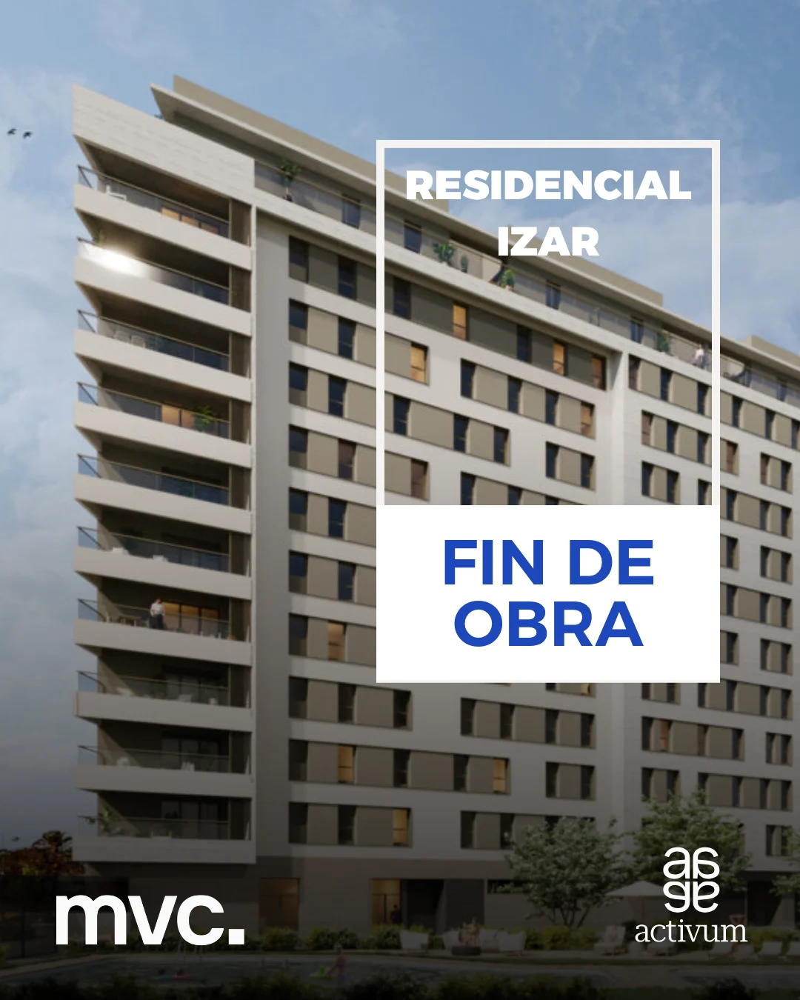
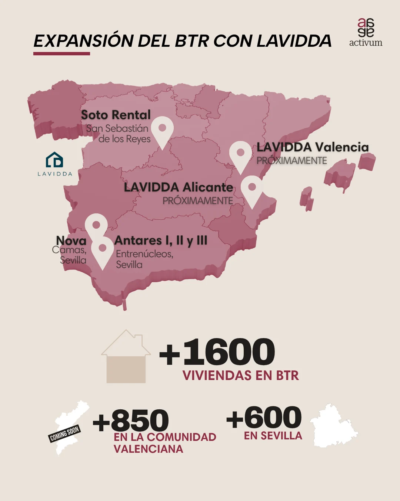
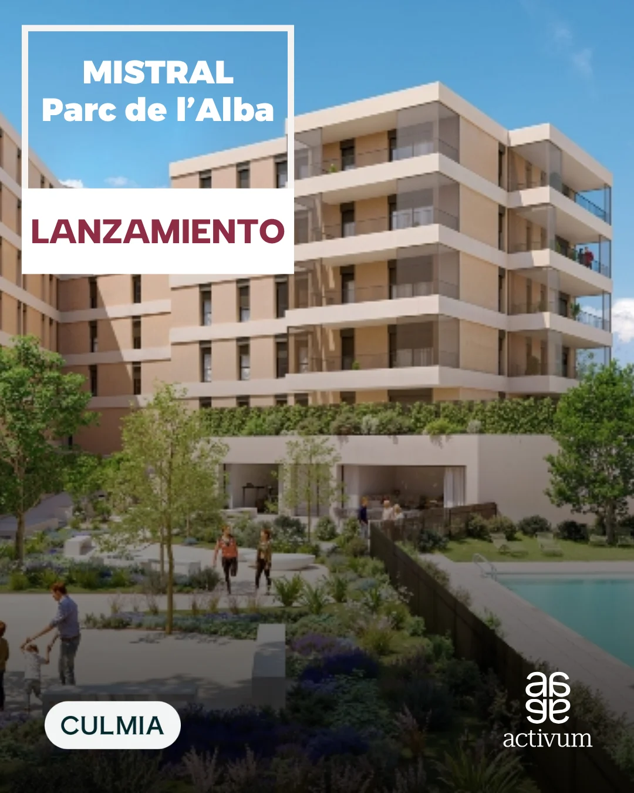
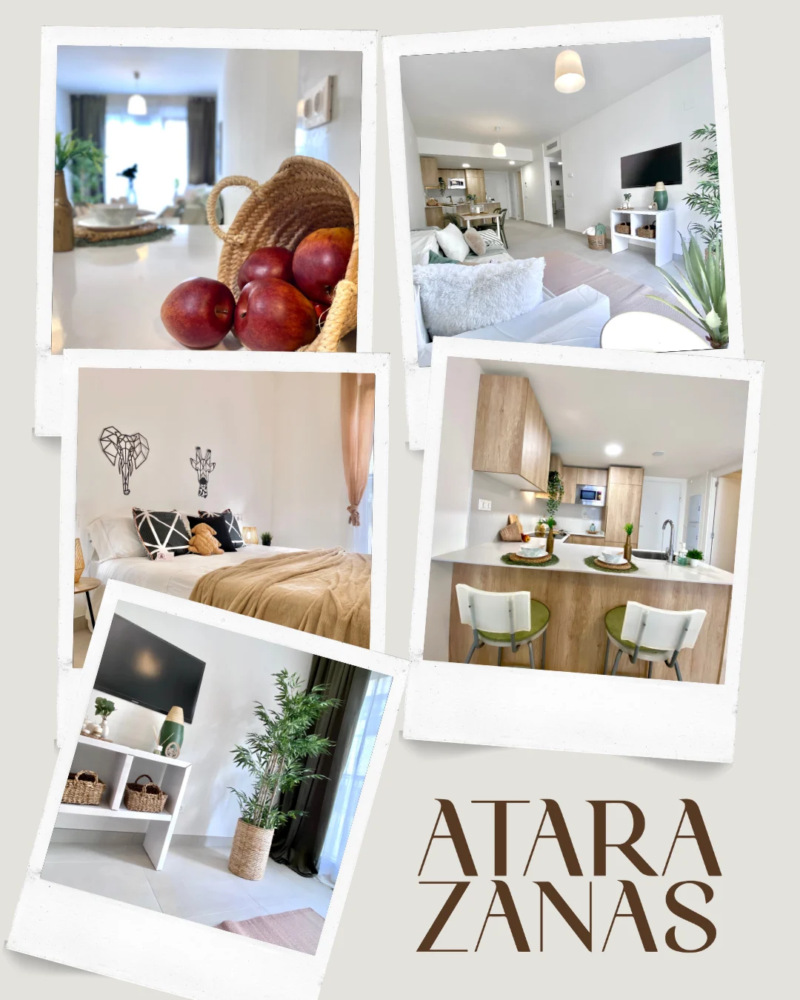
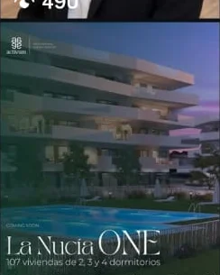
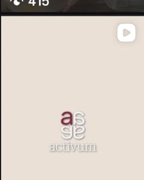
Una misma marca en dos canales con tonos distintos: cercana en Instagram, corporativa en LinkedIn.One brand on two channels with different tones: approachable on Instagram, corporate on LinkedIn.
Instagram y LinkedIn de una consultora inmobiliaria con más de 30 años de experiencia.Instagram and LinkedIn for a real estate consultancy with over 30 years of experience.
Línea gráfica para cada red, calendario conjunto, carruseles, posts, stories, PDFs y reels, algunos generados con IA; gestión de comunidad y programación con Metricool.A visual line per network, a shared calendar, carousels, posts, stories, PDFs and reels, some generated with AI; community management and scheduling in Metricool.
Carruseles, de la portada al cierreCarousels, from cover to close
Fin de obra de Residencial Izar: portada, entrega, zonas comunes y cierre de marca. Desliza para verlo.Residencial Izar handover: cover, delivery, shared spaces and brand close. Swipe through it.
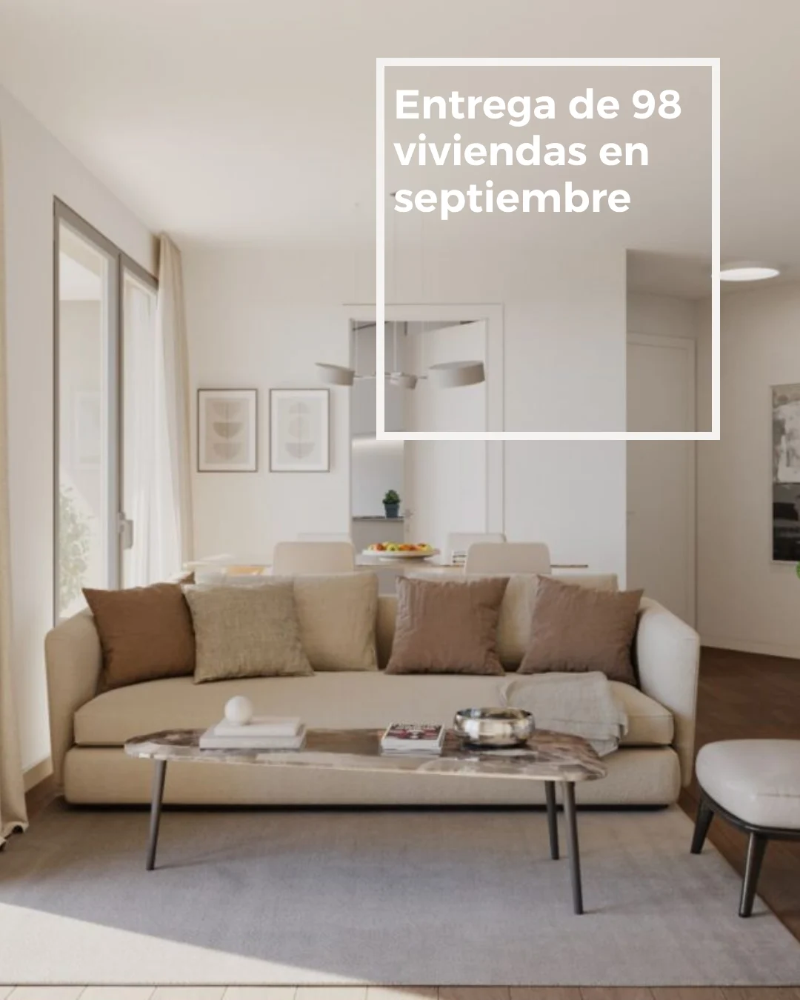
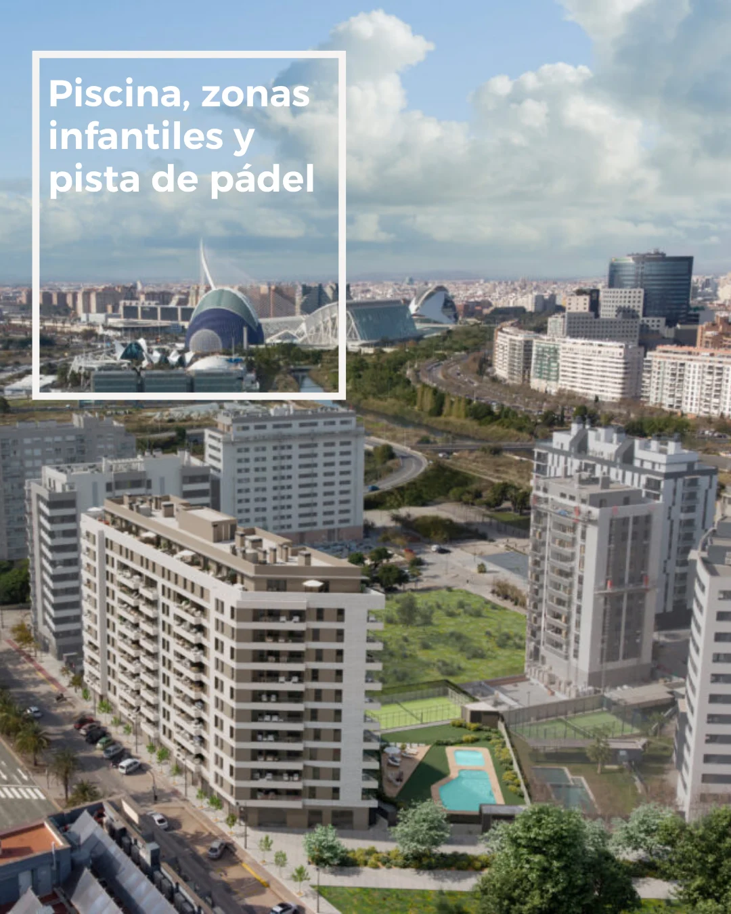
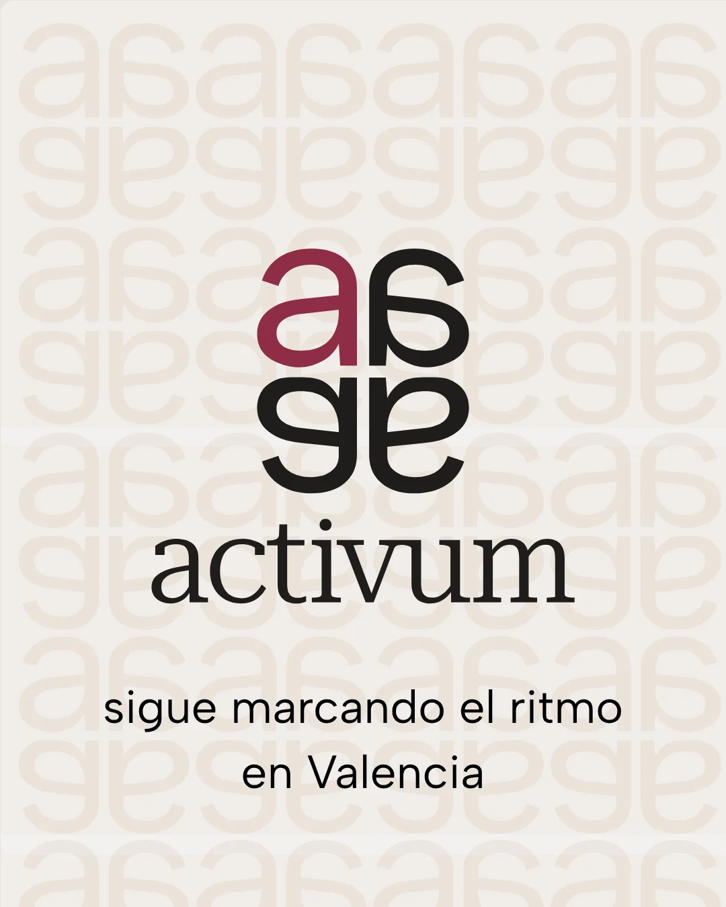

ResultadoResult
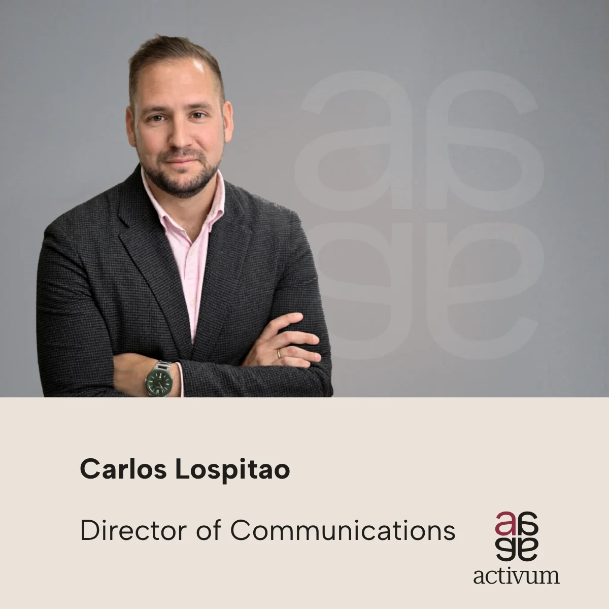
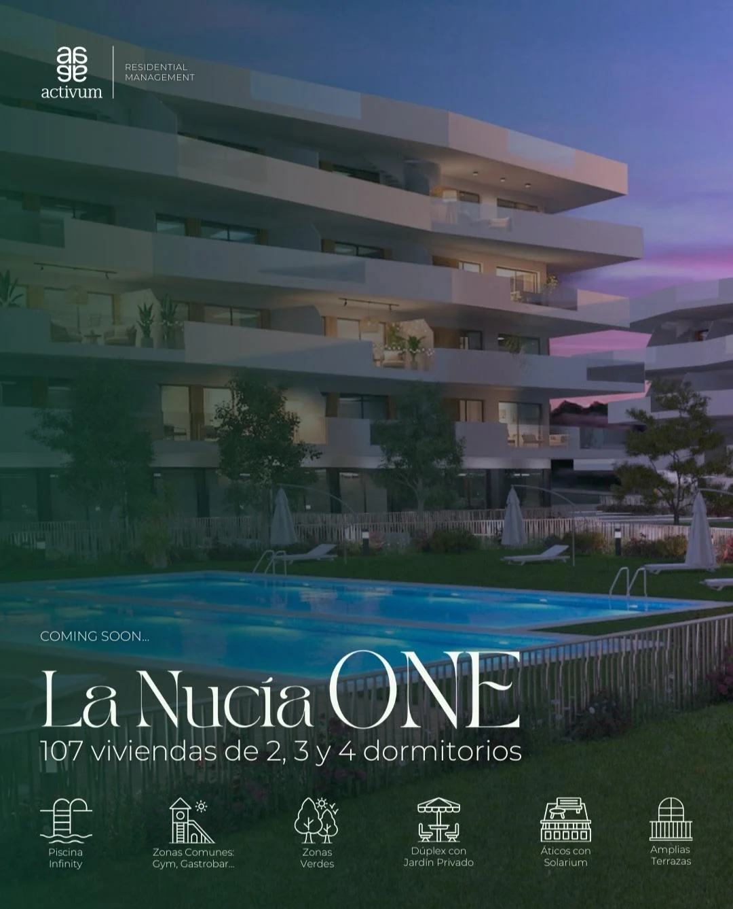